Je telefoon luistert mee
Je kind speelt blokfluit, de telefoon luistert mee. Elke noot kleurt groen of rood en bij een foute noot zie je meteen de goede greep.
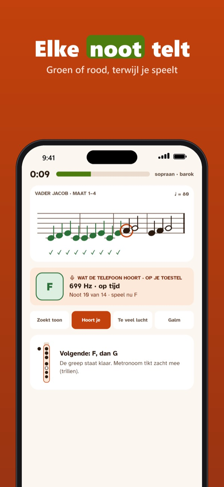
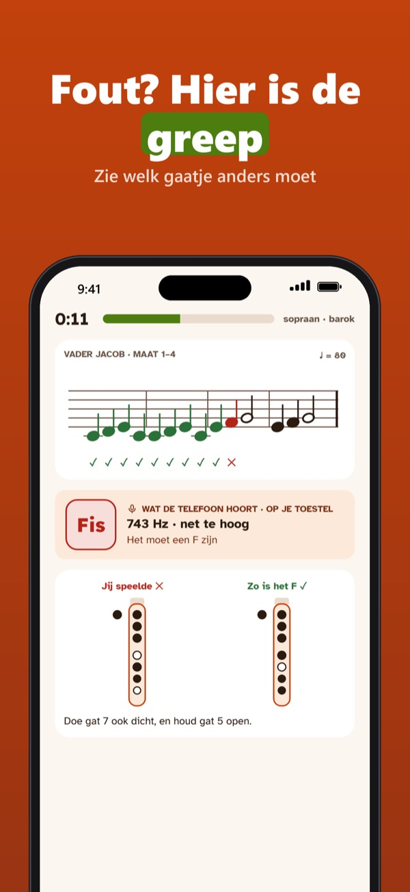
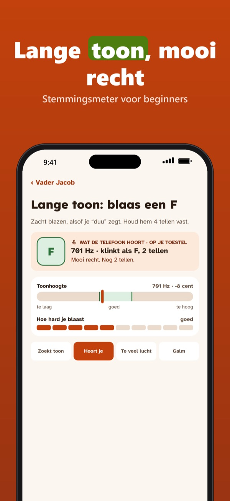
Fluitfox helpt je kind thuis blokfluit oefenen. Kies een liedje, bekijk de greep en speel. De telefoon hoort welke noot er klinkt en of hij op tijd komt. Op de notenbalk kleurt elke noot groen of rood, en bij een foute noot zie je welk gaatje anders moet.
De eerste 5 liedjes, luisteren en de grepentabel werken zonder aankoop. Fluitfox Plus is een eenmalige aankoop: alle 14 liedjes, tot 6 spelers op één telefoon en Delen met gezin. Geen abonnement, geen reclame.
Fluitfox luistert alleen tijdens het spelen en herkent noten op je telefoon. Er wordt geen geluid opgeslagen of verstuurd. De herkenning is een hulp en kan zich vergissen; je kunt elke noot zelf goedkeuren. Fluitfox is bedoeld voor ouders en vervangt geen muziekles.
Terms of Use (EULA): https://www.apple.com/legal/internet-services/itunes/dev/stdeula/
Privacy: https://apps.baytech.nl/fluitfox-eu/
Telefon słyszy każdą nutę
Dziecko gra na flecie prostym, a telefon słucha. Każda nuta robi się zielona albo czerwona, a przy błędzie od razu widać dobry chwyt.
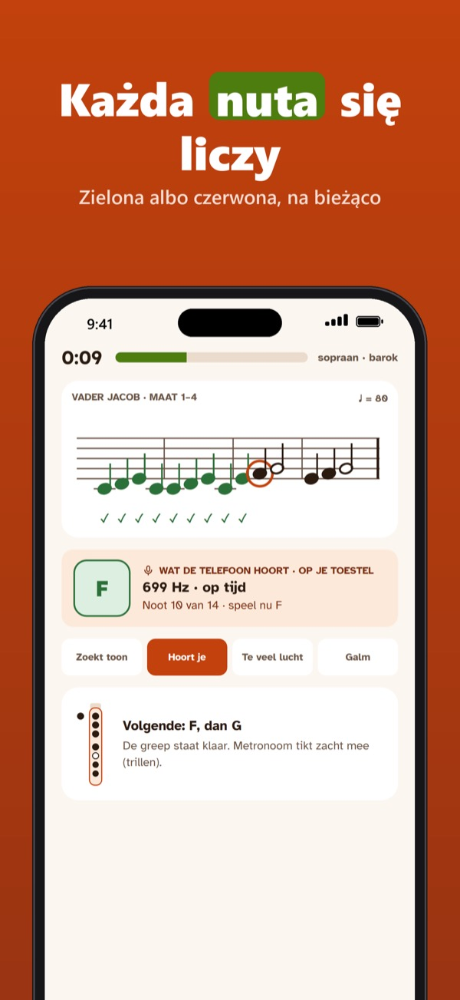
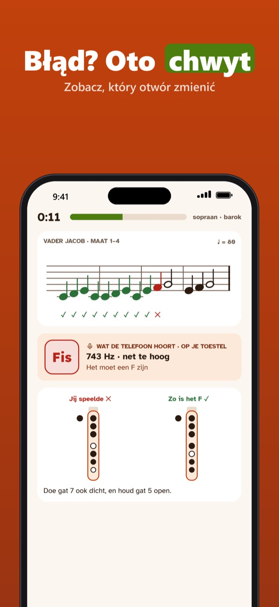
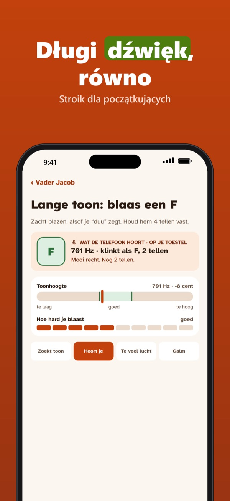
Fluitfox pomaga dziecku ćwiczyć grę na flecie prostym w domu. Wybierz piosenkę, zobacz chwyt i graj. Telefon słyszy, jaka nuta brzmi i czy jest w rytmie. Na pięciolinii każda nuta zmienia kolor na zielony albo czerwony, a przy błędzie widać, który otwór trzeba zmienić.
Pierwsze 5 piosenek, słuchanie i tabela chwytów działają bez zakupu. Fluitfox Plus to jednorazowy zakup: wszystkie 14 piosenek, do 6 graczy na jednym telefonie i Chmura rodzinna. Bez subskrypcji, bez reklam.
Fluitfox słucha tylko podczas gry i rozpoznaje nuty w telefonie. Dźwięk nie jest zapisywany ani wysyłany. Rozpoznawanie to pomoc i może się mylić; każdą nutę możesz zatwierdzić sam. Aplikacja jest dla rodziców i nie zastępuje lekcji muzyki.
Terms of Use (EULA): https://www.apple.com/legal/internet-services/itunes/dev/stdeula/
Privacy: https://apps.baytech.nl/fluitfox-eu/
Telefon slyší každý tón
Dítě hraje na zobcovou flétnu a telefon poslouchá. Každá nota zezelená nebo zčervená a u chyby hned uvidíš správný hmat.
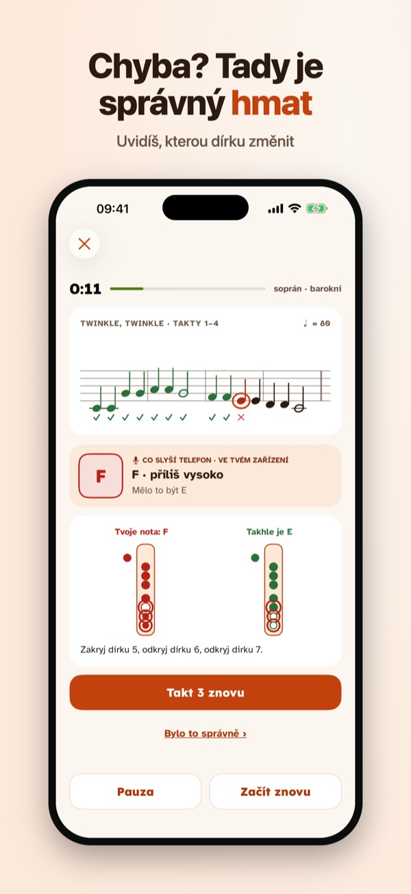
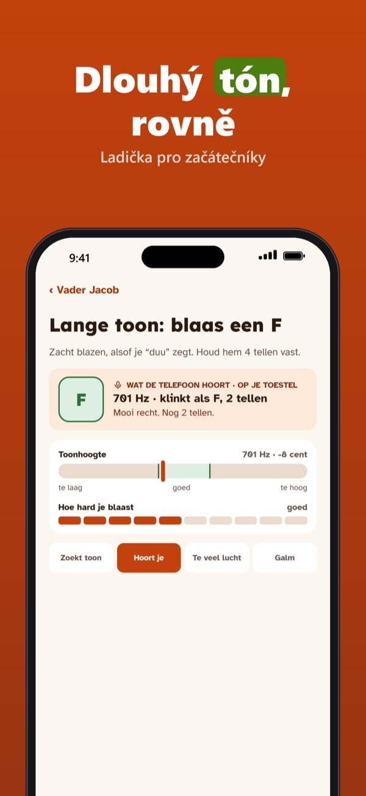
Fluitfox pomáhá dítěti cvičit na zobcovou flétnu doma. Vyber písničku, podívej se na hmat a hraj. Telefon slyší, jaký tón zní a jestli je v rytmu. Na notové osnově se každá nota obarví zeleně nebo červeně a u chyby uvidíš, kterou dírku změnit.
Prvních 5 písniček, poslech a tabulka hmatů fungují bez nákupu. Fluitfox Plus je jednorázový nákup: všech 14 písniček, až 6 hráčů na jednom telefonu a rodinné sdílení. Bez předplatného, bez reklam.
Fluitfox poslouchá jen při hraní a tóny rozpoznává v telefonu. Zvuk se neukládá ani neodesílá. Rozpoznávání je pomůcka a může se splést; každou notu můžeš schválit sám. Aplikace je pro rodiče a nenahrazuje hodiny hudby.
Terms of Use (EULA): https://www.apple.com/legal/internet-services/itunes/dev/stdeula/
Privacy: https://apps.baytech.nl/fluitfox-eu/
Mobilen lyssnar när du spelar
Barnet spelar blockflöjt och mobilen lyssnar. Varje ton blir grön eller röd, och vid fel ton ser du direkt rätt grepp.
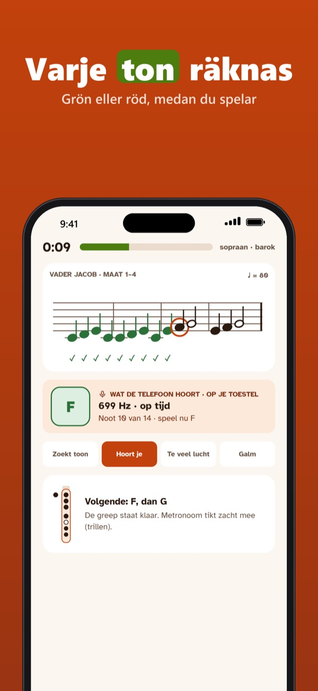
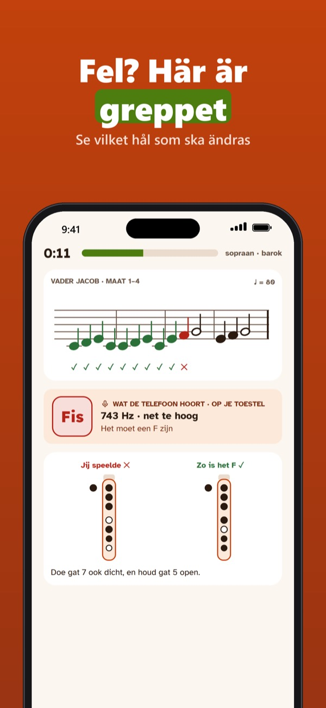
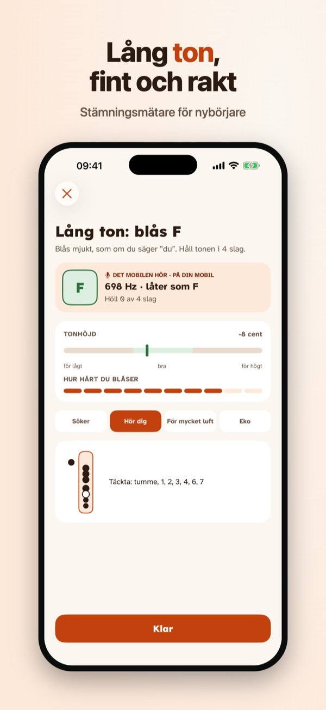
Fluitfox hjälper barnet att öva blockflöjt hemma. Välj en sång, titta på greppet och spela. Mobilen hör vilken ton som låter och om den kommer i takt. På notraden blir varje ton grön eller röd, och vid fel ton ser du vilket hål som ska ändras.
De första 5 sångerna, lyssning och greppschemat fungerar utan köp. Fluitfox Plus är ett engångsköp: alla 14 sånger, upp till 6 spelare på en mobil och Familjedelning. Ingen prenumeration, ingen reklam.
Fluitfox lyssnar bara medan barnet spelar och känner igen toner i mobilen. Inget ljud sparas eller skickas. Igenkänningen är en hjälp och kan ta fel; du kan godkänna varje ton själv. Appen är gjord för föräldrar och ersätter inte musiklektioner.
Terms of Use (EULA): https://www.apple.com/legal/internet-services/itunes/dev/stdeula/
Privacy: https://apps.baytech.nl/fluitfox-eu/
Mobilen hører hver tone
Barnet spiller blokfløjte, og mobilen lytter. Hver tone bliver grøn eller rød, og ved en forkert tone ser du straks det rigtige greb.
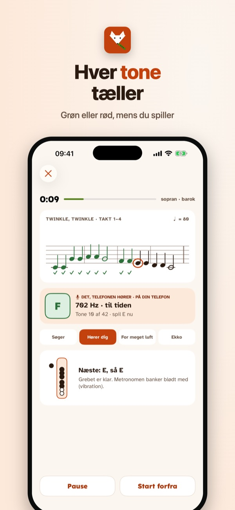
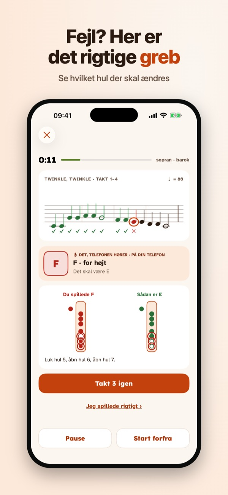
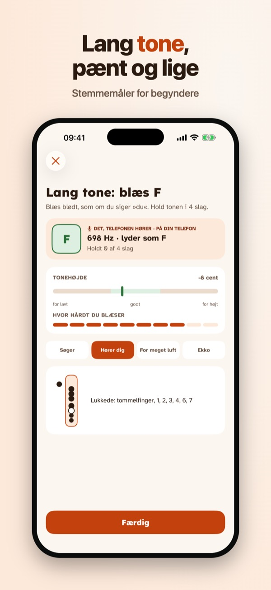
Fluitfox hjælper barnet med at øve blokfløjte derhjemme. Vælg en sang, se grebet og spil. Mobilen hører, hvilken tone der lyder, og om den kommer til tiden. På nodelinjen bliver hver tone grøn eller rød, og ved en forkert tone ser du, hvilket hul der skal ændres.
De første 5 sange, lytning og grebstabellen virker uden køb. Fluitfox Plus er et engangskøb: alle 14 sange, op til 6 spillere på én mobil og Familiedeling. Intet abonnement, ingen reklamer.
Fluitfox lytter kun, mens barnet spiller, og genkender toner på mobilen. Ingen lyd gemmes eller sendes. Genkendelsen er en hjælp og kan tage fejl; du kan selv godkende hver tone. Appen er lavet til forældre og erstatter ikke musikundervisning.
Terms of Use (EULA): https://www.apple.com/legal/internet-services/itunes/dev/stdeula/
Privacy: https://apps.baytech.nl/fluitfox-eu/
Das Handy hört jeden Ton
Dein Kind spielt Blockflöte, das Handy hört zu. Jeder Ton wird grün oder rot, und bei einem falschen Ton siehst du sofort den richtigen Griff.
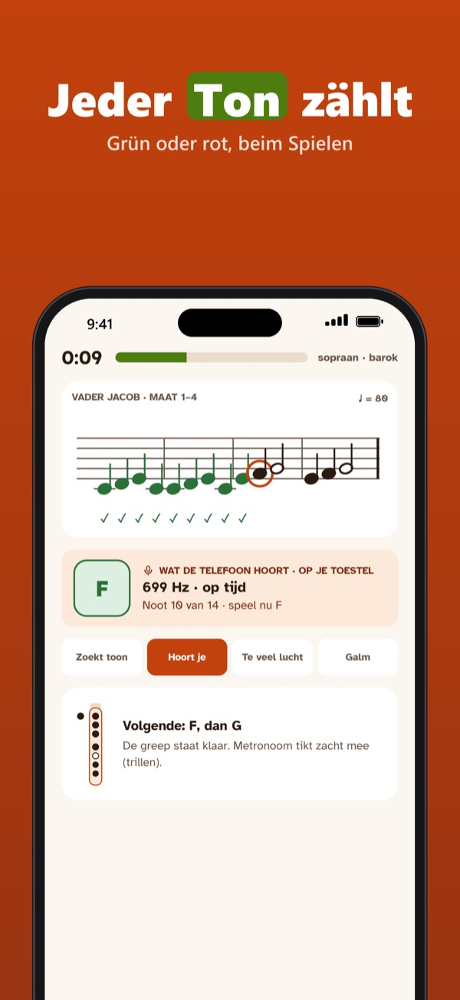
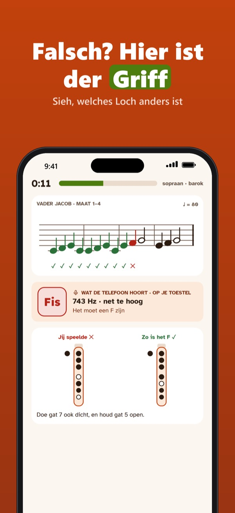
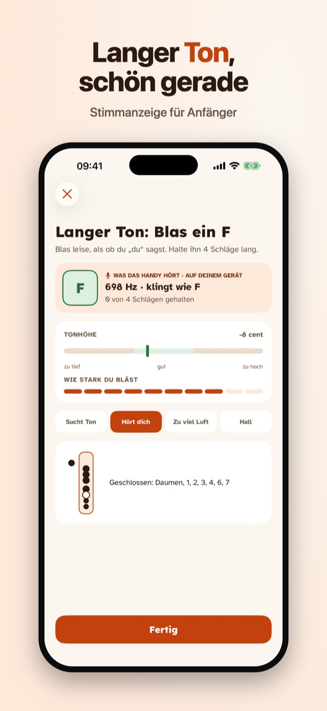
Fluitfox hilft deinem Kind, zu Hause Blockflöte zu üben. Lied wählen, Griff ansehen, spielen. Das Handy hört, welcher Ton klingt und ob er im Takt kommt. Auf den Notenlinien wird jeder Ton grün oder rot, und bei einem falschen Ton siehst du, welches Loch anders sein muss.
Die ersten 5 Lieder, das Zuhören und die Grifftabelle funktionieren ohne Kauf. Fluitfox Plus ist ein Einmalkauf: alle 14 Lieder, bis zu 6 Spieler auf einem Handy und Familienfreigabe. Kein Abo, keine Werbung.
Fluitfox hört nur beim Spielen zu und erkennt Töne auf dem Handy. Es wird kein Ton gespeichert oder gesendet. Die Erkennung ist eine Hilfe und kann sich irren; du kannst jeden Ton selbst bestätigen. Die App richtet sich an Eltern und ersetzt keinen Musikunterricht.
Terms of Use (EULA): https://www.apple.com/legal/internet-services/itunes/dev/stdeula/
Privacy: https://apps.baytech.nl/fluitfox-eu/
Le téléphone écoute tes notes
Votre enfant joue de la flûte à bec, le téléphone écoute. Chaque note devient verte ou rouge, et en cas d’erreur le bon doigté s’affiche.
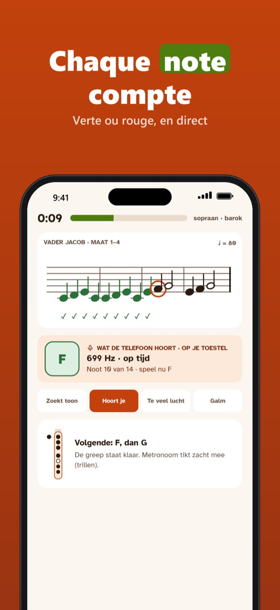
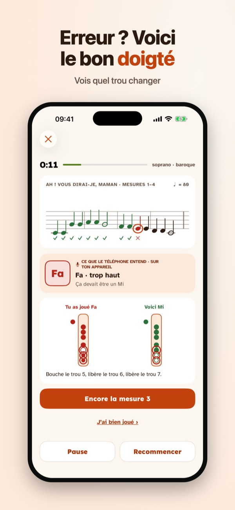
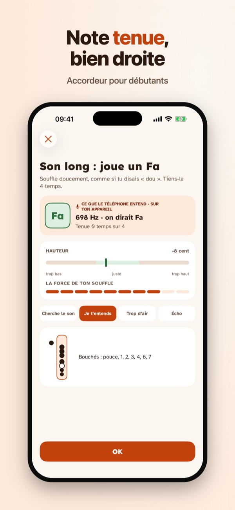
Fluitfox aide votre enfant à s’entraîner à la flûte à bec à la maison. Choisissez une chanson, regardez le doigté et jouez. Le téléphone entend quelle note sonne et si elle arrive en rythme. Sur la portée, chaque note devient verte ou rouge, et en cas d’erreur vous voyez quel trou changer.
Les 5 premières chansons, l’écoute et le tableau des doigtés fonctionnent sans achat. Fluitfox Plus est un achat unique : les 14 chansons, jusqu’à 6 musiciens sur un téléphone et le partage familial. Sans abonnement, sans pub.
Fluitfox n’écoute que pendant le jeu et reconnaît les notes sur le téléphone. Aucun son n’est conservé ni envoyé. La reconnaissance est une aide et peut se tromper ; vous pouvez valider chaque note vous-même. L’app s’adresse aux parents et ne remplace pas un cours de musique.
Terms of Use (EULA): https://www.apple.com/legal/internet-services/itunes/dev/stdeula/
Privacy: https://apps.baytech.nl/fluitfox-eu/
El móvil escucha cada nota
Tu hijo toca la flauta dulce y el móvil escucha. Cada nota se pone verde o roja y, si falla, ves al momento la posición correcta.
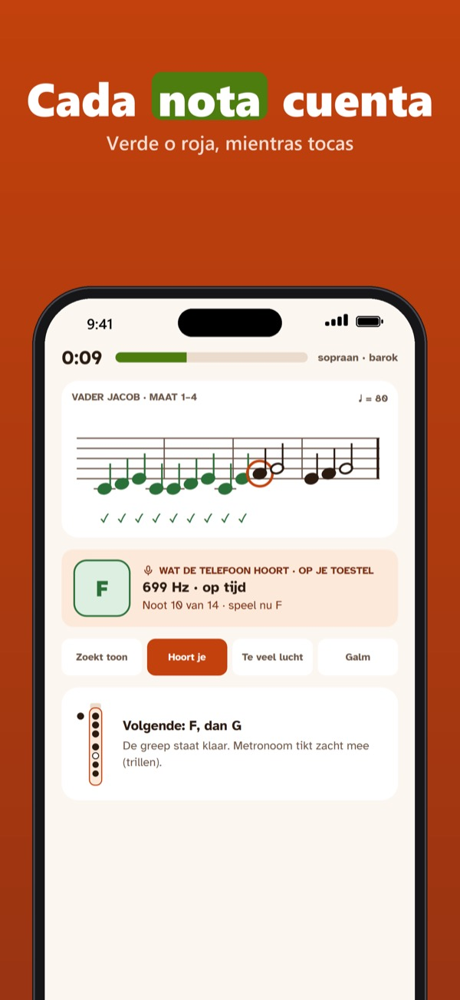
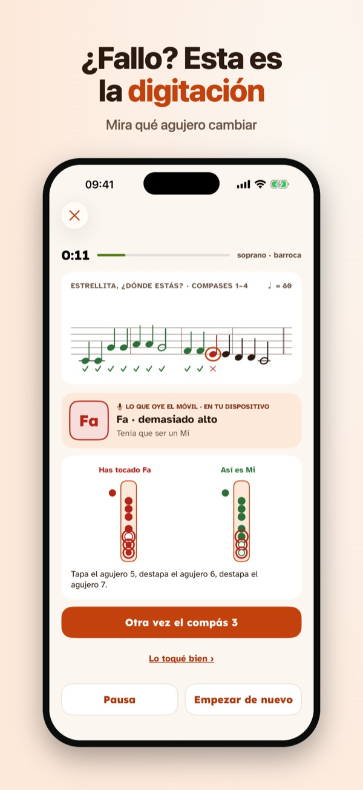
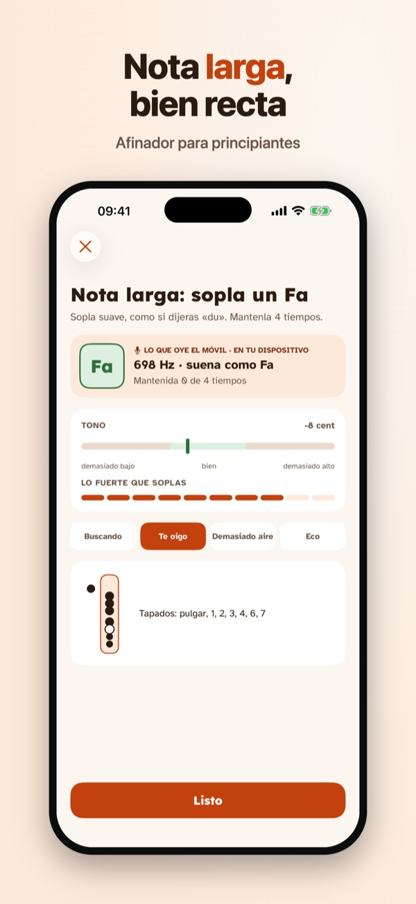
Fluitfox ayuda a tu hijo a practicar la flauta dulce en casa. Elige una canción, mira la posición de los dedos y toca. El móvil oye qué nota suena y si llega a tiempo. En el pentagrama cada nota se pone verde o roja y, si falla, ves qué agujero cambiar.
Las 5 primeras canciones, la escucha y la tabla de posiciones funcionan sin compra. Fluitfox Plus es una compra única: las 14 canciones, hasta 6 músicos en un móvil y En familia. Sin suscripción, sin anuncios.
Fluitfox solo escucha mientras se toca y reconoce las notas en el móvil. No se guarda ni se envía ningún sonido. El reconocimiento es una ayuda y puede fallar; puedes dar por buena cada nota tú mismo. La app es para padres y no sustituye las clases de música.
Terms of Use (EULA): https://www.apple.com/legal/internet-services/itunes/dev/stdeula/
Privacy: https://apps.baytech.nl/fluitfox-eu/
Il telefono ascolta le note
Tuo figlio suona il flauto dolce e il telefono ascolta. Ogni nota diventa verde o rossa e, se sbaglia, vedi subito la diteggiatura giusta.
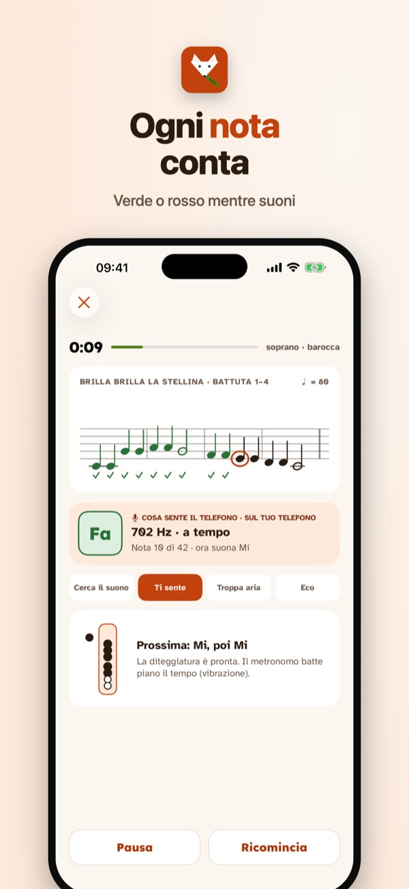
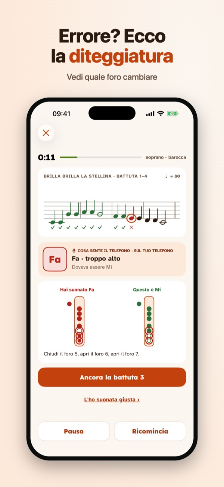
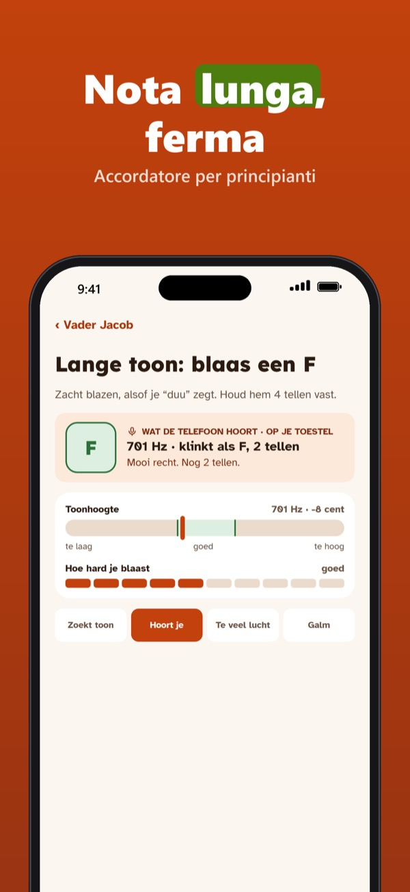
Fluitfox aiuta tuo figlio a esercitarsi al flauto dolce a casa. Scegli una canzone, guarda la diteggiatura e suona. Il telefono sente quale nota suona e se arriva a tempo. Sul pentagramma ogni nota diventa verde o rossa e, se sbaglia, vedi quale foro cambiare.
Le prime 5 canzoni, l’ascolto e la tabella delle diteggiature funzionano senza acquisto. Fluitfox Plus è un acquisto unico: tutte le 14 canzoni, fino a 6 musicisti su un telefono e In famiglia. Niente abbonamento, niente pubblicità.
Fluitfox ascolta solo mentre si suona e riconosce le note sul telefono. Nessun suono viene salvato o inviato. Il riconoscimento è un aiuto e può sbagliare; puoi confermare tu ogni nota. L’app è pensata per i genitori e non sostituisce le lezioni di musica.
Terms of Use (EULA): https://www.apple.com/legal/internet-services/itunes/dev/stdeula/
Privacy: https://apps.baytech.nl/fluitfox-eu/